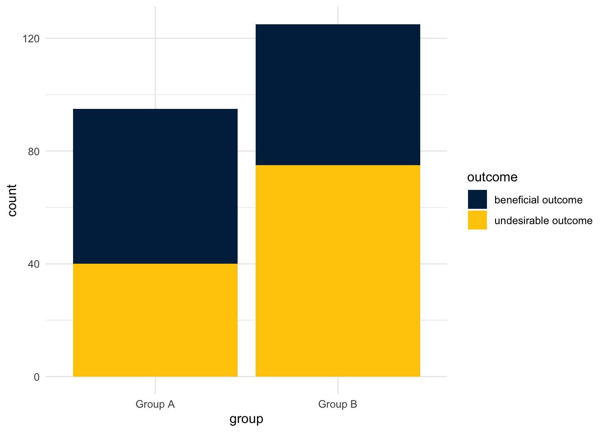
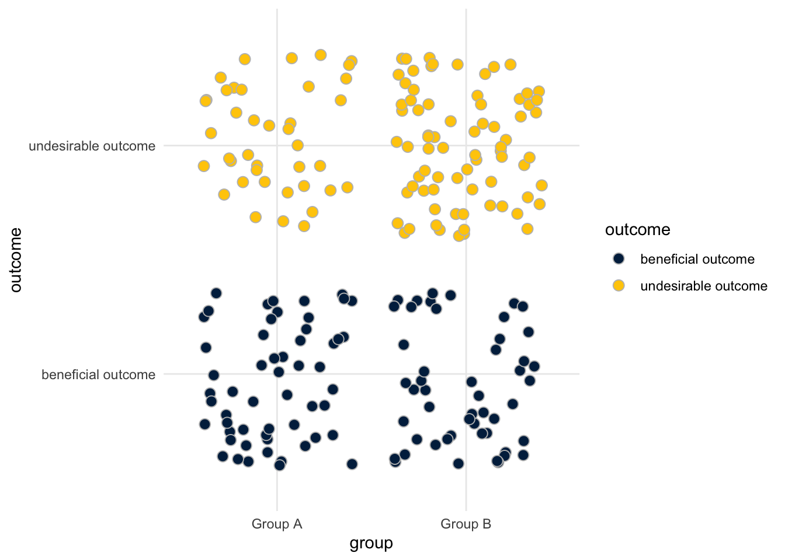

Visualizing Disparities in a Categorical Risk Factor or Outcome
Telling Stories With Data
stats
dataviz
Author
Andy Grogan-Kaylor
Published
November 8, 2023
Introduction
Visualizing categorical data presents unique challenges. A common solution is a bar graph, which may often be the best data visualization solution.
However there are also some alternatives to bar graphs.
Below I present some options for bar graphs, and some possible alternative strategies.
Note that the outcomes–which you could think of as a good outcome, or a bad outcome, are unevenly distributed by group. Therefore, these data represent inequities or disparities.
Some Data
I create some simulated data with the tribble function. The data are created so that the two groups experience the outcomes unequally.
Show the code
library(tibble) # rowise data frame (tibble) creationlibrary(tidyr) # data wranglingmydata <-tribble(~group, ~outcome, ~count,"Group A", "beneficial outcome", 55,"Group A", "undesirable outcome", 40,"Group B", "beneficial outcome", 50,"Group B", "undesirable outcome", 75)mydata$group <-factor(mydata$group) # data wranglingmydata$outcome <-factor(mydata$outcome) # data wrangling# duplicate the observations by countmydata <- mydata %>%uncount(count) pander(table(mydata)) # nice table of data
beneficial outcome
undesirable outcome
Group A
55
40
Group B
50
75
Call The Graphing Library
I use University of Michigan colors in these graphs, which is completely optional. You can find installation instructions for the Michigan graph scheme here.
Show the code
library(ggplot2)library(michigancolors)
Bar Graphs
Bar graphs are often the simplest and best option for displaying categorical data. When used with an aesthetically pleasing color scheme, bar graphs can be an effective way of displaying data.
There are several different types of bar graph.
Stacked Bar Graph
Show the code
ggplot(mydata, aes(x = group, # x is groupfill = outcome)) +# color fill is outcomegeom_bar() +# barsscale_fill_manual(values =michigancolors()) +# Michigan colorstheme_minimal() # nice theme

Unstacked Bar Graph
Show the code
ggplot(mydata, aes(x = group, # x is groupfill = outcome)) +# color fill is outcomegeom_bar(position =position_dodge()) +# "dodged" barsscale_fill_manual(values =michigancolors()) +# Michigan colorstheme_minimal() # nice theme
Faceted Bar Graph
Show the code
ggplot(mydata, aes(x = outcome, # x is outcomefill = outcome)) +# color fill is outcomegeom_bar() +# barsscale_fill_manual(values =michigancolors()) +# Michigan colorstheme_minimal() +# nice themetheme(axis.text.x =element_text(size =rel(.75))) +# smaller x axis textfacet_wrap(~group) # facet on group
Pie Chart
In ggplot terms, pie charts are bar graphs displayed with polar coordinates.
Show the code
ggplot(mydata, aes(x =1, # x is always 1fill = outcome)) +# color fill is outcomegeom_bar(position ="fill") +# barsscale_fill_manual(values =michigancolors()) +# Michigan colorstheme_void() +# void theme for pie chartscoord_polar(theta ="y") +# polar coordinatesfacet_wrap(~group) # facet on group
Jittered Points
Jittered points may be a good choice because every point represents an individual in the data set. However, it may be difficult to draw exact conclusions from jittered points.
Jittered points may (or may not) benefit from having an outline in a different color to make them more distinct.
Show the code
ggplot(mydata, aes(x = group, # x is groupfill = outcome,y = outcome)) +# color fill is outcomegeom_jitter(size =3, # jittered pointspch =21, # Point Character 21; filled pointscolor ="grey") +# outline colorscale_fill_manual(values =michigancolors()) +# Michigan colorstheme_minimal() # nice theme

Mosaic Plot
Mosaic plots are another way to display data. They are especially effective for being clear about the relative membership in different groups, and about the proportion of each group experiencing each outcome.
Lastly, waffle plots may be a useful way to display information. Waffle plots are aesthetically appealing. The aesthetic appeal of a waffle plot may, however, obscure the fact that they may not provide the clearest presentation of quantitative information. Waffle plots work best when the sample size is several hundred or fewer.
Waffle plots require some data wrangling.
Call The Libraries
Show the code
library(waffle) # waffle geometrylibrary(dplyr) # data wrangling
Make A Data Set Of Counts
Show the code
# make a data set of countsmycounts <- mydata %>%group_by(group, outcome) %>%# group by group & outcometally() # count up observationspander(mycounts) # replay this data
group
outcome
n
Group A
beneficial outcome
55
Group A
undesirable outcome
40
Group B
beneficial outcome
50
Group B
undesirable outcome
75
Make The Waffle Plot
Show the code
# use geom_waffle with this data set of countsggplot(mycounts, # use this new dataaes(fill = outcome, # color fill is outcomevalues = n)) +# values are ngeom_waffle(color ="grey") +# waffle geometry w/ grey separatorfacet_wrap(~group) +# facet on groupcoord_equal() +# squares!scale_fill_manual(values =michigancolors()) +# Michigan colorstheme_void() # nice theme
Alluvial Diagram
Lastly, an alluvial diagram may be useful to illustrate a flow from one status to another.
We will use the data set of mycounts that we generated above.